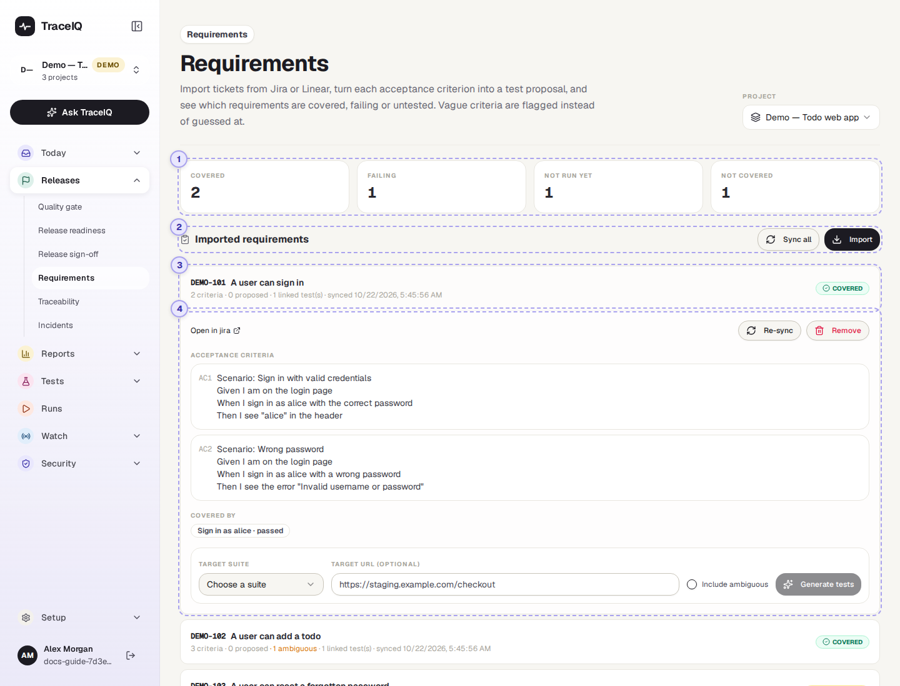
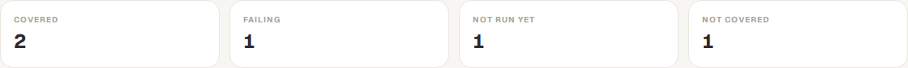
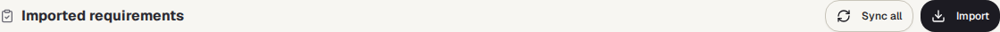
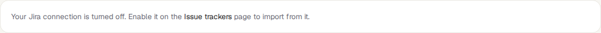
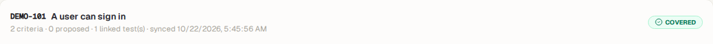
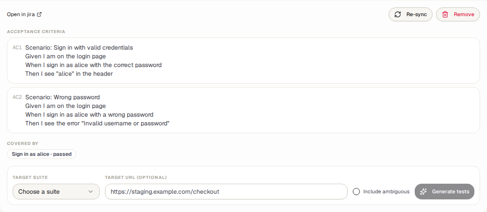

Requirements
Bring your tickets (user stories, requirements) in from Jira or Linear. TraceIQ reads each ticket's acceptance criteria, can turn every criterion into a suggested test, and shows for each ticket whether its tests are passing, failing, not run yet, or missing.
What it is for
Requirements answers "Is everything we promised actually tested, and does it work?" A ticket usually lists its acceptance criteria: the conditions that must be true for the work to count as done, such as "a guest can pay by card". This page keeps a copy of those tickets next to your tests, points out criteria that are too vague to test, and drafts a test for each of the others.
Product owners
See at a glance which tickets are covered by passing tests and which have none yet.
Testers
Get a first draft of a test for each acceptance criterion, and a warning when a criterion is too vague.
Leads
Find the gaps before a release: tickets that are failing or not covered at all.
Where to find it: in the sidebar, open Releases → Requirements.
A tour of the screen
The counts are at the top, then the list of imported tickets. In the picture the first ticket has been opened. The numbers on the screenshot match the sections below.

The Project menu at the top right is the same choice as the project picker in the sidebar: changing it here changes it for the whole app.
The four counts

Every imported ticket falls into exactly one of these:
| Count | A ticket counts here when… |
|---|---|
| Covered | …it has linked tests, and the newest result of every one of them passed. |
| Failing | …the newest result of at least one linked test failed (or ended in error). |
| Not run yet | …it has linked tests, none failing, but at least one has never run. |
| Not covered | …no test is linked to it yet. |
A test is linked to a ticket when its requirement reference is the ticket's key
(for example DEMO-101). Links come from accepting a test generated here,
or are added by hand on the Traceability page; both count. "Newest result"
means the test's most recent result in this project, whichever version of the app it
ran on. To judge one particular version, use Release readiness.
Sync all and Import

- Sync all fetches every imported ticket again from Jira or Linear, so its title, status, description and acceptance criteria are up to date. A message says how many were synced and how many failed.
- Import opens the import panel (the button then reads Close import).

Once a connection exists (set up on Setup → Issue trackers, and switched on), the panel has:
- Connection: which Jira or Linear connection to use.
- For Jira, JQL: a Jira search, for example
project = SHOP AND sprint in openSprints(). For Linear: a team key, words in the title, and a label. - Search shows up to 25 matching tickets with tick boxes; ones you already imported are marked "imported". Import selected brings in the ticked ones.
- Or type ticket keys (
SHOP-12, SHOP-14) and press Import by key. Keys that don't exist are listed in a warning.
Importing a ticket that is already there updates it instead of adding a second copy.
A ticket

One row per imported ticket, in order of their keys. The first line is the ticket's key and title. The second line says how many acceptance criteria were found, how many already have a suggested test ("proposed"), how many are too vague ("ambiguous", in amber), how many tests are linked, and when it was last fetched. "sync error" in red means the last fetch failed. On the right is its count from ①. Click the row to open it.
The demo's web project has five tickets, one or more in each count:
DEMO-101 and DEMO-102 are covered (102 has one vague
criterion), DEMO-103's test has never run, DEMO-104 has a
failing test, and DEMO-105 has no test yet, only a suggested one.
An opened ticket

- Open in jira / linear (when the ticket has an address) opens the original ticket. Re-sync fetches just this one again. Remove takes the ticket off this page after you confirm; the tests and their links stay.
- Acceptance criteria: each criterion found in the ticket, numbered
AC1, AC2… A criterion that already has a suggested test shows its number and state
(for example #41 pending), which links to the Proposals page.
A vague one says why in amber, for example Ambiguous: vague term "fast".
In the picture,
DEMO-101's two criteria are Given/When/Then scenarios. - Covered by: the linked tests and the result of each one's newest run ("not run" if it never ran).
- Generate tests: pick the suite the suggested tests should go into, optionally the address of the page they should start on, and whether to include the vague criteria. Then press Generate tests.
Generate tests makes one proposal per criterion and puts it in the queue on Today → Proposals, where a person accepts or rejects it. Only an accepted proposal becomes a real test, and it is then linked to the ticket by itself. A workspace can allow confident suggestions to be accepted automatically; a draft that still needs work never is.
If no AI is set up for TraceIQ (or the AI allowance has run out), each proposal is an empty outline marked needs authoring that someone fills in.
| How criteria are found | Example |
|---|---|
| Given / When / Then scenarios | Given a guest with items in the cart, When they pay by card, Then they see the order number |
| A heading "Acceptance criteria" followed by lines | The lines under it, one criterion each |
| Bullet lists and checklists | - [ ] The total includes VAT |
| Numbered labels | AC1: The page shows the delivery date |
If the ticket's description contains none of these, its title becomes its one criterion. When a ticket is synced again, a criterion whose wording hasn't changed keeps its suggested test; a reworded one starts afresh.
A criterion is flagged as ambiguous when it is shorter than three words, uses a vague word such as fast, easy, intuitive or works as expected, or names nothing a test could check (Given/When/Then without a Then). Speed words are fine when a number goes with them: "loads within 2 s" is testable, "loads fast" is not.
Watch it in use
How to…
…bring in this sprint's tickets
- Press Import. (You need the editor role and to be a member of the workspace.)
- Choose the connection and type a search, for example
project = SHOP AND sprint in openSprints(). - Press Search, tick the tickets you want, and press Import selected.
…get draft tests for a ticket
- Click the ticket to open it, and read its acceptance criteria. Reword vague ones in Jira or Linear, then press Re-sync.
- Under Generate tests, choose the Target suite and, if you know it, the page address.
- Press Generate tests. A message says how many proposals were queued.
- Open Today → Proposals to review and accept them.
…find what isn't tested before a release
- Look at Failing and Not covered in the counts.
- Scan the list for those labels and open each ticket to see which test is failing, or that there is none.
- For a release check of one version, use Release readiness, which judges the same links on that version's runs.
Good to know
- TraceIQ only reads from Jira and Linear. Importing and syncing never change the ticket. (Tickets to Jira are filed from Failure triage; Linear connections are import-only.)
- Who can do what. Anyone with access to the project can look. Importing, syncing, removing and generating need the editor role; searching and importing also need workspace membership, because the connection belongs to the whole workspace.
- One project at a time. A ticket is imported into the selected project, and only that project's tests count towards it.
- Criteria are not re-generated by accident. A criterion whose suggestion is still waiting, or was already accepted, is skipped when you press Generate tests again.
- Check runs don't count. The runs TraceIQ makes to check a suggested fix are left out of the coverage.
- Imports, removals and generated proposals are recorded in the audit log.
Related pages
Traceability
The next page in this guide: link tests to tickets by hand, and find tests linked to nothing.
Proposals
Where the generated tests wait for someone to accept or reject them.
Issue trackers
Connect Jira or Linear, so tickets can be imported.
Release readiness
The same tickets, judged on the runs of one version of your app.